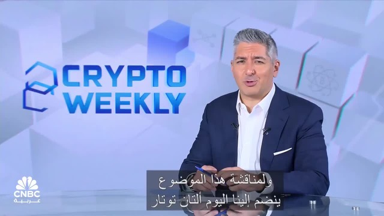
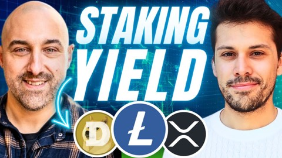
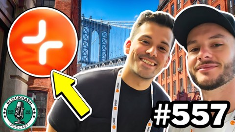
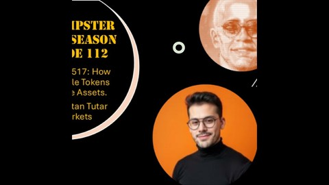
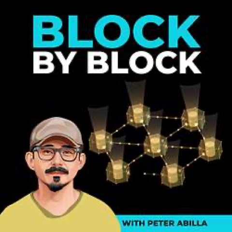

Podcasts, conference talks and panels. Titles and channels as published.

Crypto Weekly: stablecoins, crypto yield and RWAs CNBC Arabia · with Henri Arslanian · November 2025
Hold DOGE, XRP, LTC? MoreMarkets lets you stake it The Interop
Web3 yield gen & BitcoinFi with MoreMarkets BlockHash Podcast, ep. 557
How to transform idle tokens into productive assets Crypto Hipster · May 2025
Turning idle crypto in very large markets into passive yield Block by Block